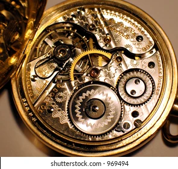

Types of Clocks
- grandfather clock
- analog clock
- digital clocks
- electronic word clocks
- auditory clocks
- tactile clock
- multi display clocks

Types of Watches

- analog watch
- digital watch
- automatic watch
- chronograph watch
- diving watch
- dress watch
- quartz watch
- mechanical watch